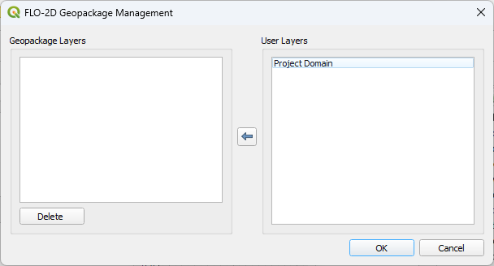
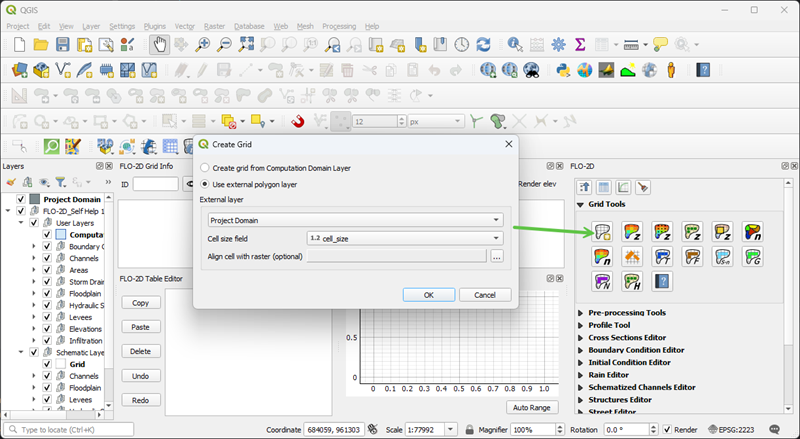
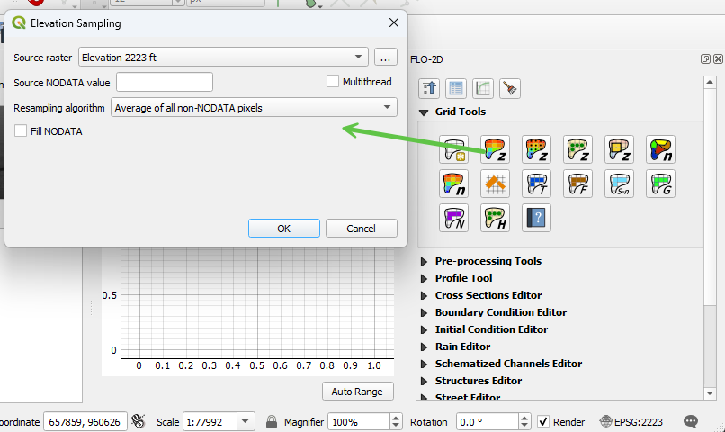
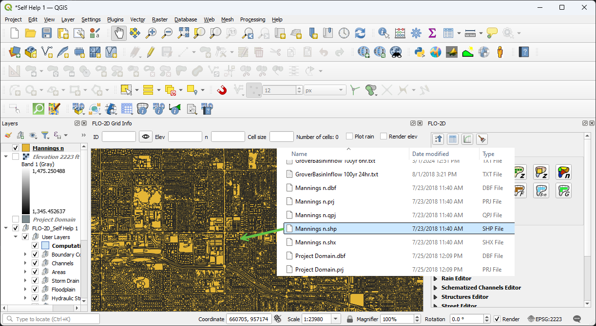
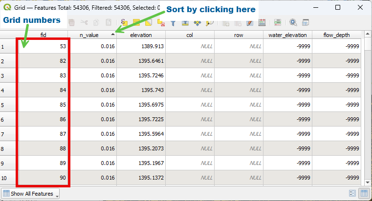
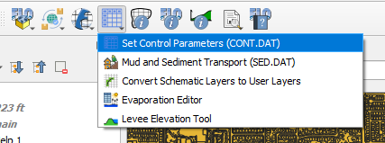
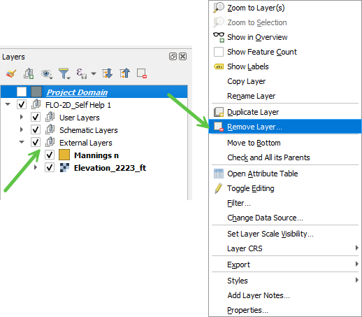
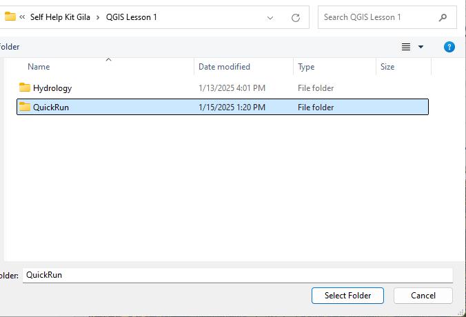

Create Project and Grid
This tutorial guides users through setting up a project in FLO-2D and QGIS.
Note
For better visibility, it is recommended to watch these videos on YouTube.
Adjusting the video playback speed to 2x can expedite the learning process.
Create a New Project
Load Project Domain
Open the Self-Help Lesson 1 folder and drag and drop the Project Domain shapefile onto the QGIS map.
Hint
If identifying the correct .shp (shapefile) file is difficult, enable file extensions in the folder view options.
QGIS should display the domain as shown below. The polygon color is randomly assigned and may differ from the example image.

Check the CRS
Open the CRS Selector by clicking the button shown in the image below:

The coordinate reference system for this project is EPSG:2223, representing NAD 83 Arizona Central. While EPSG:2868 or EPSG:6405 are generally preferred for Arizona, EPSG:2223 will be used throughout this tutorial to maintain consistency with the provided data.
Important
For new projects, consult local city, county, or state agencies, or a surveying team to determine the appropriate coordinate system.
The following image displays a filtered list of Arizona coordinate systems:

Close the window if the coordinate system is set correctly.
Create a New Project
Locate the FLO-2D Toolbar and click the New Project button.

Hint
The project name should be descriptive, including key details such as study location, project number, or start date. In this tutorial, a simplified naming convention is used for clarity.
Use the Create button to navigate to the Self-Help Kit Gila directory and name the GeoPackage file appropriately, such as Self-Help Kit or Project 1.
Project Settings Overview
The Project Settings dialog box provides key details about the project:
Displays essential project-related information.
If the unit system is not recognized, update the FLO-2D plugin.
User data entry is optional but can assist future users in retrieving project details.
If the FLO-2D Build version is displayed as Version not Found, an experimental FLOPRO.exe may be installed on the system.
The grid cell size displayed in this dialog is not used. Instead, refer to the “Computational Domain” attribute for the correct setting. Instructions are available in the Assign Grid Roughness section.
A default n value is applied to all projects. This value is intentionally low to encourage modification based on Assign Grid Roughness guidelines. Updating overland roughness is essential for accurate modeling. If a project is submitted to technical support with unchanged default n values, it may indicate that key adjustments have been overlooked.
Set the CRS using the pop-up dialog and click OK.

Click OK to close the Project Settings window. This action will initialize the FLO-2D plugin and save the QGIS project.
When prompted with save options, external data can either be embedded into the GeoPackage or referenced using file paths.
Click Yes when prompted to save.

Managing External Layers
The GeoPackage Management Tool provides options for handling external layers.
To ensure that a layer remains accessible within the project, move it to the left side of the dialog box.
Layers that are temporary or non-essential can remain on the right side.
Layers that are server connected like Google Maps or from FLO-2D MapCrafter will always use the Path option.
For this tutorial, the Project Domain layer is only needed once and will be copied into the Computational Domain layer. It does not need to be retained within the GeoPackage.
After setup, the project interface should appear as follows:
FLO-2D Widget positioned on the right side of QGIS.
Table and Plotting Windows located at the bottom.
FLO-2D Grid Info Panel displayed on the left.

Setup the Grid
Expand the Grid Tools Widget and click the Create Grid button.
Select External Layer and choose Project Domain as the layer.
Set the Cell Size field to cell_size and click OK to generate the grid.
The FLO-2D plugin will generate and validate the grid.
Hint
If this process takes longer than expected, verify that the correct field is being used. Selecting the FID field instead of cell_size may result in an excessively large grid. If this occurs, allow the process to complete and then retry with the appropriate field.
The dialog displays the cell size, grid count, and elapsed time for grid generation. While the elapsed time varies based on system performance and grid size, this metric assists in evaluating plugin optimization.

Assign Elevation
Load the Elevation File
To begin, add the elevation raster to the project by dragging and dropping it onto the map.

Assign Elevation to the Grid
From the Grid Tools Widget, select the Assign Elevation Data to Grid tool. Complete the dialog box as shown below and click OK to process the elevation.
For additional information on this tool and its interpolation methods, click the Help button.

Adjust Layer Visibility
To improve visibility, deselect Elevation and Project Domain in the Layers panel. This will ensure the grid is clearly displayed.

Review Grid Elevation
Enable the Render Elevation checkbox to inspect the assigned elevation values. Once the review is complete, disable this option to optimize map rendering performance.

Assign Grid Roughness
Load the Manning’s n Shapefile
To assign roughness values, add the Manning’s n shapefile to the project.
Assign Roughness Values
Use the Assign Roughness from Polygon tool to apply roughness values to the grid.

Hint
When using a roughness raster, select the Assign Roughness from Raster option.
Review Grid Attributes
To verify the assigned values, open the Grid Attribute Table:
Right-click the Grid layer.
Select Open Attribute Table.

The attribute table can be sorted by clicking on the column headers. The FID field represents the Grid Element Number (GE Number).
Hint
Avoid opening the Grid Attribute Table if the grid contains more than one million cells, as performance may be significantly impacted.
Assign Control Parameters
Configure Control and Stability Parameters
Open the FLO-2D Parameters Group and select the first option to access the Control and Stability Parameters dialog.
Complete the fields as shown in the example below.

Hint
Tooltips are available in this dialog to provide descriptions of each variable. The variable names correspond to those in Chapter 4 of the Data Input Manual, making it easy to locate specific tables for reference.
Review Numerical Stability Parameters
Navigate to the Numerical Stability tab and review the parameter values.

Hint
For a more detailed understanding, refer to the Numerical Stability section of the FLO-2D Reference Manual and review related webinar recordings by Dr. Jimmy O’Brien. These resources are available in the Training Packages section on the FLO-2D website and in the ShareFile Webinar Series folder. Webinar Series
Save, Export, and Run
Save the Project
Click the QGIS Save button and confirm by selecting Yes in the dialog box.

Move the Elevation and Manning’s n layers to the left side of the dialog box. This action saves these layers to the GeoPackage.

The FLO-2D Plugin automatically organizes external layers added to the GeoPackage into a separate group. The Project Domain layer can be removed, as it has already been copied into the Computational Domain.
Review the GeoPackage Structure
Open the Browser Panel and dock it next to the Layers Panel by dragging the panel with a left-click and dropping it on the Layers Panel when highlighted.

Connect to the Project GeoPackage by right-clicking the GeoPackage section and selecting New Connection. Choose the Project GeoPackage file and click Open.

Expand the GeoPackage and use the E, G, and M keys on the keyboard to quickly navigate to tables that begin with those letters.

Using SQL Tools in GeoPackage
To execute SQL queries, right-click the Grid layer and select Execute SQL.

To compute basic statistics on the n_value field in the grid table within a GeoPackage database, use the following SQL query:
SELECT
MIN(n_value) AS min_value,
MAX(n_value) AS max_value,
AVG(n_value) AS mean_value,
SUM(n_value) AS sum_value,
COUNT(n_value) AS total_entries,
(SUM(n_value * n_value) / COUNT(n_value)) - (AVG(n_value) * AVG(n_value)) AS variance,
SQRT((SUM(n_value * n_value) / COUNT(n_value)) - (AVG(n_value) * AVG(n_value))) AS std_dev
FROM grid;
Query Explanation:
MIN(n_value): Returns the minimum roughness value.
MAX(n_value): Returns the maximum roughness value.
AVG(n_value): Computes the mean roughness value.
SUM(n_value): Returns the sum of all roughness values.
COUNT(n_value): Counts the total number of records.
variance: Computes the variance of n_value.
std_dev: Computes the standard deviation.
Executing the Query in QGIS:
Right-click the grid table and select Execute SQL.
Paste the SQL query into the query editor.
Click Run to execute the query and display the results.
Hint
Using SQL processing is a more efficient method for analyzing data in GeoPackages. Large grids (over 1 million cells) may experience performance issues when using QGIS table joins and table tools. SQL-based queries operate directly on the database without requiring additional memory allocation, making them significantly faster.
Quick Run
The Quick Run feature allows exporting data and running the model in a single step.

Create a new folder named Quick Run inside the Lesson 1 directory and select it.
Uncheck Rain and click OK to initiate a Quick Run test.

If the model starts successfully, the License Status will be displayed, and the simulation will begin.

Hint
The Quick Run feature executes FLOPRO.EXE validation checks. If the model starts, the verification process has passed. For additional information on ASCII data files used by the FLOPRO.EXE engine, refer to the accompanying YouTube tutorial.
Run Demo Engine
Note
The Self-Help Tutorial does not require a license. Use the Demo-Engine as shown in the video to take this tutorial with a demo version of the software.